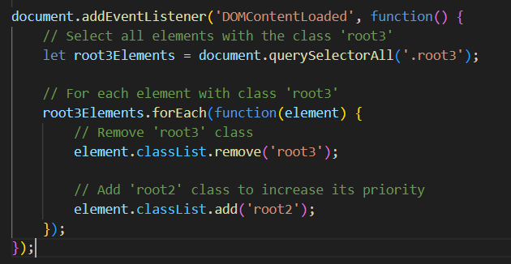

Give root rights to your tags!
- Give priority to different root permissions
- Capture mode
- Different connection types
- h2 class="root5" join us now.
Give root rights to your tags!
- Give priority to different root permissions
- Capture mode
- Different connection types
- h2 class="root5" join us now.
You can capture root tags
in this example root2>root3